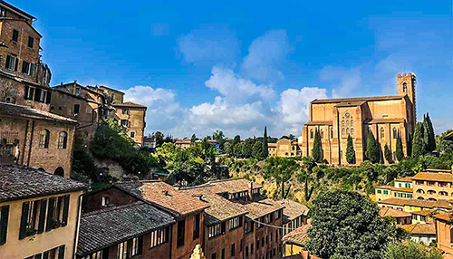

Siena
Siena is a city in Tuscany, Italy. It is the capital of the province of Siena. The historic centre of Siena has been declared by UNESCO a World Heritage Site. It is one of the nation's most visited tourist attractions, with over 163,000 international arrivals in 2008. Siena is famous for its cuisine, art, museums, medieval cityscape and the Palio, a horse race held twice a year.
Siena retains a ward-centric culture from medieval times. Each ward (contrada) is represented by an animal or mascot, and has its own boundary and distinct identity. Ward rivalries are most rampant during the annual horse race (Palio) in the Piazza del Campo. The Palio di Siena is a traditional medieval horse race run around the Piazza del Campo twice each year, on 2 July and 16 August. The event is attended by large crowds, and is widely televised.
Over the centuries, Siena has had a rich tradition of arts and artists. The list of artists from the Sienese School include Duccio and his student Simone Martini, Pietro Lorenzetti and Martino di Bartolomeo. A number of well-known works of Renaissance and High Renaissance art still remain in galleries or churches in Siena.